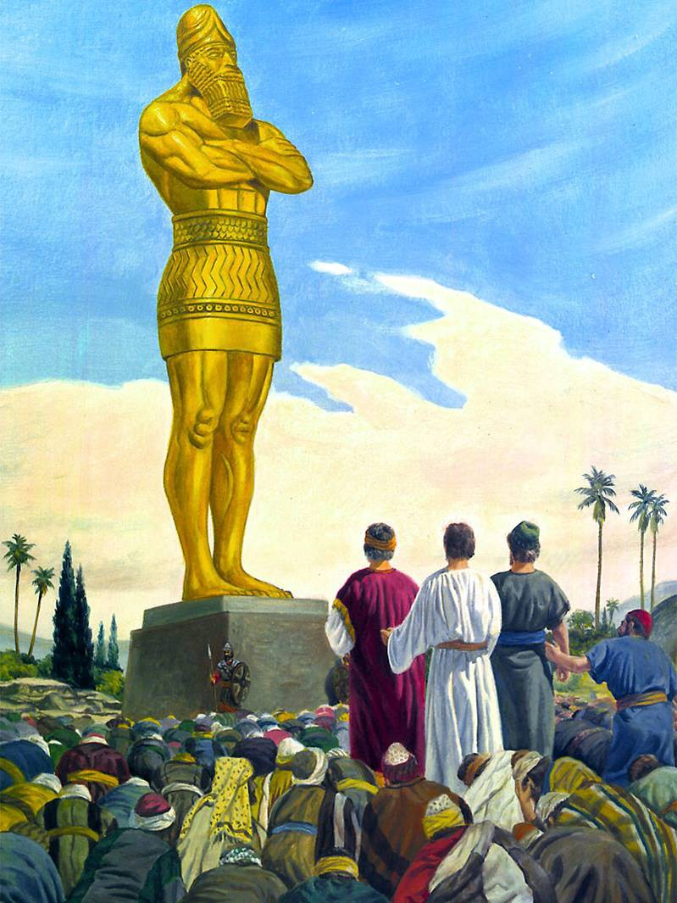

I glanced across the large audience under the tent. The usual crowd . . . a mixture of Ecuadorian faces, from toddler to elderly. A few teens hid shyly in the back shadows, fearing the opinions of their peers. Many had heard a rumor that the "gringos" were presenting films over at the tent and that was the best show in town.
This typical South American crowd had one thing in common. None had ever heard a clear presentation of the gospel and most of them never would again. Whatever I preached in the next few moments had to be simple and clear.
I began by declaring: "God is a good God!" I realized those God saved that night would face trials in the coming months. We would need to help them through the process of who God is and what he intends by the term good. I also knew there are no shortcuts.
Do I regret using the simplistic opening, "God is good"? Not one bit.
As new believers mature in Christ, they soon realize issues are not as simple as previously thought. Eventually the convert suffers a financial setback, an illness in the family, or some other difficulty. They begin to suspect that perhaps God has something wholly different in mind than first imagined. The new believer sees from the Bible that God is Almighty. Why then does he not do something about this problem?
Friends tell him the devil caused it. Does this mean that God has no control over the devil? There is little comfort in that!
Soon the local faith-brigade comes along and dutifully informs him that it is his own fault because of a lack of faith. So it all depends on him? But "self" does not seem up to the task these days. Feelings of guilt overwhelm him as he wonders if he is starting to blame God.
In short, he is encountering the age-old dilemma: The Sovereignty of God and the suffering righteous.
Is it possible to lay the responsibility at God's doorstep while continuing to love and trust him?
The only problem with the declaration, "God is a good God," is man's mistaken definition of the word "good." Left without explanation, it suggests a standard for goodness apart from God. This is nonsense. He has no rules tacked up on his throne room wall to consult. If such rules existed independently of God then they would be greater than he. The will of God alone is the ultimate standard of goodness.
In Genesis Chapter One, God planted a tree in Eden and called it "the tree of the knowledge of good and evil." God forbade man to eat of it, and for an excellent reason: Man's finite nature restricts his ability to define correctly good and evil. God alone has that prerogative. We repeat Adam's sin when we presume otherwise.
Before we address the issue of the highest good, we must determine if God is in absolute control. If he is not, then it hardly matters what he esteems as the highest good because he cannot enforce it anyway. Either he is sovereign or not.
There was a time in church history, not too far back, in which anyone who even questioned the Sovereignty of God was considered heretical. Yet just today I read the first chapter of a book by an evangelist who categorically denies that God is in control of this world. He claims that God's hands are tied unless someone prays. This is blasphemous.
Scripture declares:
He does as he pleases with the powers of heaven and the peoples of the earth. No one can hold back his hand or say to him: "What have you done?" Daniel 4:35
Our God is in heaven; he does whatever pleases him. Psalm 115:3
The LORD does whatever pleases him, in the heavens and on the earth, in the seas and all their depths. Psalm 135:6
...who, by the power that enables him to bring everything under his control, will transform our lowly bodies so that they will be like his glorious body. Phillipians 3:21
My purpose will stand, and I will do all that I please. Isaiah 46:10
What about the freewill of man? Is God also in control of that? Questions like these naturally arise at this point. We must address them frankly because this is the crux of the whole issue of the suffering saint. Most of us have heard that God respects the limitations of man's will. It is interesting that people are quick to attribute to man what they deny to God. Does God have a free will? If so, whose will dominates . . . His or ours? If we say His, then can we be sure ours is totally free? Let's see some biblical examples...
Nebuchadnezzar

This pagan king of Babylon made three serious mistakes. First, he made a god to suit himself, Daniel Chapter Three.
How typically human! Man wants a god he can manipulate. Non-threatening. Easy to live with. Today people are more enlightened. Instead of using gold they simply invent gods of their own imagination.
Secondly, he used every means at his command to get others to worship his sham god. It's a good thing Nebuchadnezzar had no media or internet access. He might have succeeded.
Thirdly, he committed the most serious error. He attributed the works of the Almighty to his god. Daniel 4:30
The true God called him a madman.
What did God do? He reached inside Nebuchadnezzar, and yanked his mind out of his head...reason, freewill, and all! It left this king a raving lunatic for the next seven years.
Did God require Nebuchadnezzar's permission to do that? Did he need anyone's prayers to accomplish it?
After the seven years, when God was ready, he restored Nebuchadnezzar's sanity.
What did Nebuchadnezzar understand about his experience once he came to his senses?
He does as he pleases with the powers of heaven and the peoples of the earth. No one can hold back his hand or say to him: "What have you done?" Daniel 4:35
The antichrist and the ten nations
Who is going to be in control of the thought processes of the Antichrist, the False Prophet, the Great Whore and the Ten Nations mentioned in Revelation? The Devil?
For God has put it into their hearts to accomplish his purpose by agreeing to give the beast their power to rule, until God's words are fulfilled. Revelation 17:17
The enemies of Jesus
This man was handed over to you by God's set purpose and foreknowledge; and you, with the help of wicked men, put him to death by nailing him to the cross. Acts 2:23
Did the apostles believe in God's sovereignty?over man's actions and will?
When they heard this, they raised their voices together in prayer to God. "Sovereign Lord," they said, "you made the heaven and the earth and the sea, and everything in them. Indeed Herod and Pontius Pilate met together with the Gentiles and the people of Israel in this city to conspire against your holy servant Jesus, whom you anointed. They did what your power and will had decided beforehand should happen." Acts 4:24,27-28
Did God control the Egyptians?
I will harden the hearts of the Egyptians so that they will go in after them. And I will gain glory through Pharaoh and all his army, through his chariots and his horsemen. Exodus 14:17
Would any be saved if God were restricted to our thoughts and wills?
...the sinful mind is hostile to God. It does not submit to God's law, nor can it do so. Romans 8:7
He went on to say, "This is why I told you that no one can come to me unless the Father has enabled him." John 6:65
All that the Father gives me will come to me, and whoever comes to me I will never drive away. John 6:37
Many Christians today follow a false concept of god unwittingly. This is a result of today's culture dispersed through vain imaginations of confused, highly esteemed teachers. They praise a mere parody of the true God, a sham god of modern Christianity.
What is this "sham god" like?
His highest ambition is to exalt man's wonderful self-potential.
He waits humbly and patiently for the kind permission of man's free will to do anything. ?He depends on man's self-generated faith.
He is frustrated in His plans by his rebellious creatures, seemingly taken by surprise and helpless to stop them.
His hands are tied unless someone prays.
He is subject to a set of spiritual laws superior to Himself.
He rewards men with money in direct proportion to their faith.
He is not really in control of this world.
He is not Sovereign.
However accommodating such a god may be to human reason, he has one fatal flaw: He does not exist.
What is the true God like?
The God of the Bible is sovereign. He is in absolute control of everything. This is true whether it seems agreeable to human reason or not.
He does as he pleases with the powers of heaven and the peoples of the earth. Daniel 4:35
Some protest, "This makes man a puppet!" Yet, anything else makes God a puppet! Others complain, "This seems unfair!" Paul's reply:
One of you will say to me: "Then why does God still blame us? For who resists his will?" But who are you, O man, to talk back to God? "Shall what is formed say to him who formed it, "Why did you make me like this?" Romans 9:19-20
Does the sovereignty of God resolve the problem of the Christian's suffering? Doesn't this lay the blame at God's doorstep, adding to the dilemma? In the short run, yes. In the end, no.
The tendency to deny God's sovereignty is a defensive reaction by well-meaning Christians to somehow get God off the hook. Perhaps God does not want to be let off the hook.
Perhaps he put Himself there deliberately. If so, we must be careful not to let him off because he might resent it. A problem with getting God off the hook is that the hook does not stay empty. We find ourselves on it instead!
Many Christians consider this solution quite acceptable. They suggest that God has relinquished part of His authority to us, and that the answer to our problems rests with ourselves. His hands are effectively tied unless we act. So, this wraps up the package neatly and we can all go home.
However, a couple of knots are loose, and I'd rather not go home just yet.
If God has relinquished any part of His Sovereignty to man, we must decide exactly what percentage. Then we'll know to what degree we can worship him. After all, we must give him all the credit if he does only part of the work. That would be unfair to us, wouldn't it?
If he has given 25% of His sovereignty to man, then let us worship God 75% and man 25%. Or we can alter 2Corinthians 1:25 to read "for by 75% faith in God you stand: the other 25% belongs to you."
Instead of calling him the Almighty, let's call him the Almost Mighty. Forgive this sarcasm. But if we must talk about dilemmas, this is a royal one.
Biblical teaching about our authority in Christ is no grounds for self-dependence. God controls the degree of our personal involvement in each case. If you drop the pen, do not worry. He can still write the check Himself.
What a horrendous error to imagine that God has relinquished any portion of His authority just because he allows some of His creatures to share it!
Error occurs by failing to distinguish between sharing authority and relinquishing it. As in a joint checking account, if you add someone's name to the account it does not remove your own authority to write checks. Nor are you limited to the approval of the other party. If you want, you can set it up so that the other need your approval, but you do not need theirs. Perfectly legal and logical.
Who has the key?
Is it rational to judge someone as faithless for being poor or sick? Example: A car requires gasoline to run. The car is not running. Therefore, it is out of gas. Sounds good so far. But wait! A car can stop for many reasons. Perhaps the engine has failed. Or maybe the owner intends to use it later.
So with our problems. Lack of faith could be a factor. On the other hand, maybe one's faith "tank" is full. In such cases, the key is in the hand of our Owner and he will turn it at the time and place of His choosing.
God's Sovereignty is no excuse for a poverty doctrine or passive acceptance of illness. Few today believe the ascetic notion that suffering is intrinsically good for the soul, or that we must submit passively to every affliction. The opposite extreme, that health and wealth are inherently good, is also wrong. Both views are opposite sides of the same false coin. Many Christians imagine themselves full of fuel because they are whizzing down the highway. Some are merely coasting downhill toward a crash.
"Good" by whose definition?
At the beginning of this article, I suggested that our perception of good might be distorted. Many assume man's welfare is God's highest priority. They define welfare as health, wealth and security. Such an assumption is deceptive.
God created man knowing he would fall. He foreknew that the vast majority of humans would perish forever. Yet he created man anyway. Why?
Does not the potter have the right to make out of the same lump of clay some pottery for noble purposes and some for common use? Romans 9:21
God's highest priority is to reveal His nature. The entire redemption story, both in salvation and condemnation, provides the background on which God displays His attributes. Man's welfare is subordinate to this.
Consider therefore the kindness and sternness of God. Romans 11:22
His intent was that now, through the church, the manifold wisdom of God should be made known to the rulers and authorities in the heavenly realms, according to His eternal purpose which he accomplished in Christ Jesus our Lord. Ephesians 3:10,11
C.S. Lewis brought out the striking thought that Shakespeare was wrong when he said, "All the world's a stage and we the actors." As we look closer, we discover the play is not about us, but about God. He is center stage, and we are merely the backdrop. Grace could not exist without a sinner. Like a flower growing out of compost, the repulsive element produces the beauty.
What about the welfare of his children?
Does not God have their concern as top priority? Yes. From the foundation of the world he has planned our highest good. He is committed to seeing us attain His best for us, whether we like it or not.
Recently I was struck by the comment: "The ultimate goal of sanctification is nothing." After scratching my head, I had to agree. Sanctification is the goal, and God loves us too much to back down from it. Holiness has no higher purpose than itself.
It follows, then, that God defines the term good in consequence of whatever will produce holiness in us. All other scriptural principles are subservient to this.
Considering this, it becomes less surprising that Christians experience trials and sufferings. If there is cause for doubt, it should be that we do not suffer more than we do.
What then are the options when we confront a serious trial? We have three, and only one is right.
Option one
Accuse God of injustice for leaving us in a helpless state.
During testing times, we may have the feeling of being abandoned by God. If this feeling were lacking, it would not be a valid test. This is a feeling only, not a reality. Knowing that trials are inevitable is a potent element for going through them successfully.
Peter warned,
Dear friends, do not be surprised at the painful trial you are suffering, as though something strange were happening to you. 1Peter 4:12
Blaming God gives only a temporary and artificial feeling of relief, like trying to put out a fire by throwing sticks at it.
Option two
Submit passively to the affliction as God's will since he is sovereign and could have prevented it.
This reaction is almost as dangerous as the previous one. Abusive religions use similar reasoning to keep their oppressed in subjection.
In Judges 3:2 we read that God left enemies in the land knowing that they would attack Israel. Why did he do such an apparently mean thing? He wanted them to learn how to fight.
Suppose the Jews had assumed that God was teaching them humility. They might have just lain down in the streets and let the chariots run over them. They would have learned humility all right, but that was not the lesson intended. Sometimes God allows the devil to attack the believer so he can develop spiritual muscle.
Peace enveloped him. The feeling of pressure was gone. It was as though God were saying, "Well, I see you finally decided to stand up and fight!"
Passivity toward every trial and affliction is both dangerous and unscriptural.
Option three
Submit to God but resist the affliction, even though we realize that God sovereignly allowed it.
Never in the history of humanity has a thorn existed as sharp as Paul's thorn in the side of some extreme charismatics. Some have devised elaborate explanations to prove that his affliction was not a physical illness, as though that were the issue.
Such scriptural gymnastics rob us of the central point of the passage. If God felt it mattered, he would have made it indisputably clear. Instead, here are Paul's instructive reactions to this thorn:
First, he never questioned the source of the affliction. He simply fought the problem.
Second, how did he fight? He humbly asked God to remove it. He did not command God, nor try to manipulate him through spiritual principles, or authoritative declarations. He simply prayed.
We should never try to manipulate God. Every time I attempt it, I get my hands slapped.
Notice that Paul prayed more than once about his problem. Some teach that it is unbelief to pray twice for the same thing. Paul evidently did not think so.
Paul's approach to the problem shows the ultimate outcome depends on his sovereign Lord. Doubtless, if God had told Paul that the answer to his affliction was to stand on his head and whistle "All Hail the King," he would have done it. He was open to whatever the Lord told him to do, even if it was to do nothing.
Yet nothing is exactly what the Lord said to do. "My grace is sufficient for you." Yet even then, Paul did not lose his holy aggression. He reached out and took hold of the affliction and wrung out every drop of grace he could. Most likely when Paul was through, the devil was thinking it would have been better to leave that preacher alone!
Someone asked me how to tell the difference between a satanic attack and a divine test. Does it matter? Since God is sovereign, it is always both anyway. God allows Satan to attack us because he wants us to defeat him by grace. Were it not for the devil, the Church might be lazy, and Christians would learn little.
It might distress us that God and Satan can agree on anything, but it is so. For two parties to test a third, they must agree on the conditions of the test.
Job illustrates this. God declared Job's sincerity, while Satan denied it. This resulted in a test of Job's integrity, with Satan being the immediate and active cause and God the ultimate and passive cause.
The notion that Job's fear finally caught up with him causing the problem, is refuted in Job 2:3,
...though you incited me against him to ruin him without any reason. Job 2:3
No cause existed from Job's side of the fence. The only thing that Job ever feared was God.
God affirmed two things: that Job did not cause the problem, and that God Himself takes full responsibility for it.
We see then that both Satan and God used the same events but with opposite intent. The difference between a satanic attack and a divine testing is in the opposing purpose. Satan wants to prove the worst about us, and God is out to prove the best about His grace in us. So it's a waste of time trying to figure out which is which. Just submit to God and fight the affliction. In all this, Job sinned not, nor charged God foolishly.
The opposing reactions of Job versus his wife's "curse God and die", glaringly exposes this difference. Sometimes a trial reveals the quality of our love. The difference shows up the minute the relationship ceases to be beneficial. We may love the Lord because he does good things for us. In His Kingdom, this alone won't pass. He wants us to love him for Himself.
What about severe tragedies? The loss of a loved one? A crippling accident? These can hardly come under the category of trials.
A tragic accident occurred during our ministry in Ecuador. A pickup truck carrying a half dozen young people overturned due to an error in judgment by the driver. She was going about 60 miles an hour at the time. It was a miracle that no one was killed. But an eight year old boy was permanently crippled in his right leg. The driver, a missionary lady, was in anguish, filled with guilt and confusion. A few days after the accident, she asked me the inevitable question, "Why did God allow it? If God is in control of all things, why did not he let me be the one injured instead of the child?"
I knew the question was coming and wanted to be prepared. So, partly out of my own frustration, I responded with another question, "Even if God were to give an answer, would it relieve this child's pain, or yours? No answer could ever erase the tragedy. Either God is God or he is not. Sometimes that is the only question that he allows us to settle." To my amazement, this brought tremendous comfort to the young lady.
Christians with a firm grasp on God's Sovereignty go through their trials and tragedies much easier than those who doubt it. This truth has been the bulwark of saints throughout the ages, and we must cling to it tenaciously.
I am no expert in suffering. I admire sweet folks who accept difficulties with quiet repose. Are they that way by grace, or is it the result of a natural disposition? Frankly, my personality leans toward temper tantrums.
To my chagrin, I discovered early that God remains unmoved by my protests. He just continues the operation anyway, as though it were none of my business. Apparently, we can add tenacity to the list of His attributes. He seems determined to bless us with qualities we didn't know were part of the bargain when we accepted Christ.
I could have done better in the past. I hope to do better in the future. It would be simple if we could find a way to remove from suffering this one minor detail: It hurts! Apart from that, suffering would be quite tolerable.
Acknowledging God's sovereignty in our trials neither relieves the pain nor answers all the questions. Our problems become endurable when we understand that they have meaning and purpose.
I'm painfully aware, (excuse the pun), that the views I've shared hardly cover the ground any more than the slogan, "God is a good God." I would be a fool to claim they did.
God's promise to mature us is more important than our comfort. So the same hook on which God appears to be in a dilemma turns out to be our anchor.
by Rev. Roger L. Smalling, D.Min.
Source: http://smallings.com/english/Essays/SovereigntyAndSuffering.html